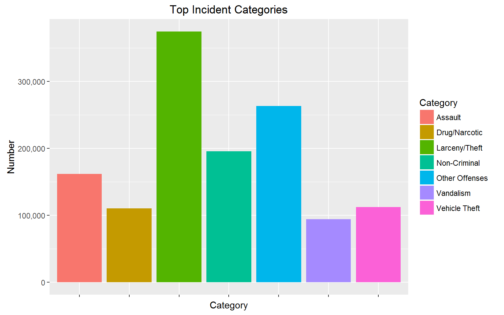
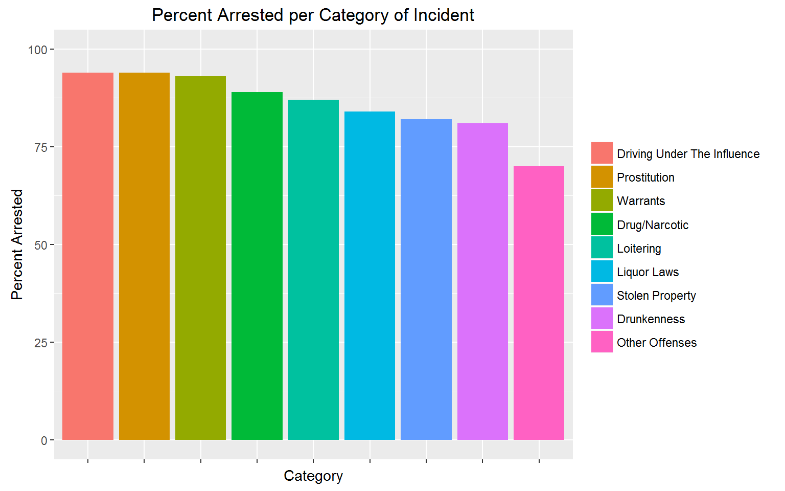
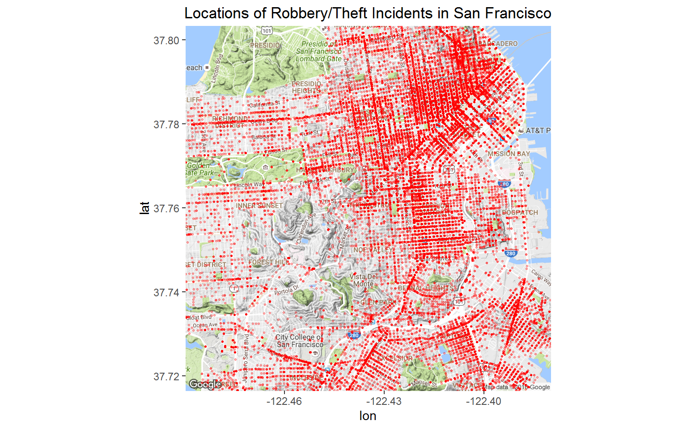
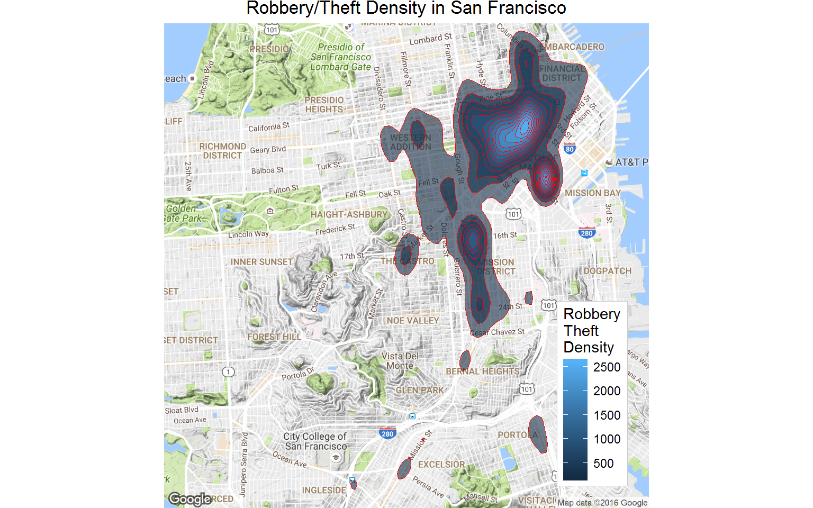
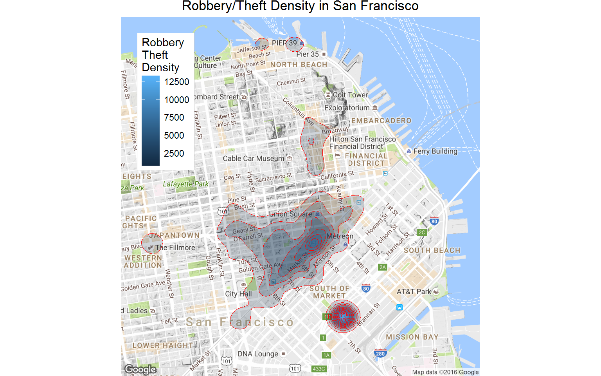
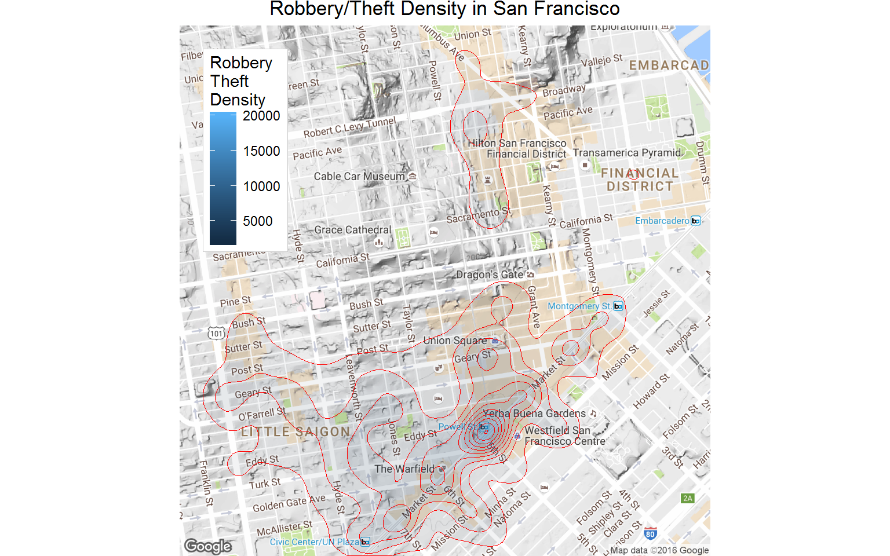
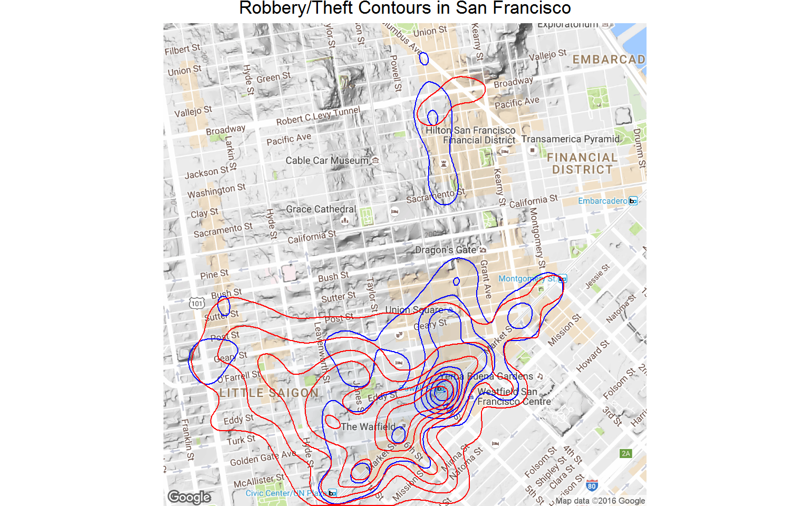

I recently stumbled onto the San Francisco Police Deparatment’s Incidents Dataset, which caught my interest and I decided to investigate further.
This dataset contains records of all the Incidents derived from SFPD Crime Incident Reporting system from 01/01/2003 up until 31/12/2014.
It contains almost 2 million incidents, where each incident has 13 data variables showing the Category, Description, and Resolution of the incident along with Date, Time and Location details.
From these it is possible to explore the data in some detail and also create some geo-data maps of incident locations.
Let’s firstly take a look at the main types of information it contains.
Category is a broad umbrella term to easily determine the nature of the incident. There are 39 categories with these being the most numerous:
sf.data %>%
group_by(Category) %>%
summarise(Num=n()) %>%
arrange(desc(Num)) %>%
head() %>%
kable()| Category | Num |
|---|---|
| Larceny/Theft | 374680 |
| Other Offenses | 263432 |
| Non-Criminal | 195806 |
| Assault | 161609 |
| Vehicle Theft | 112148 |
| Drug/Narcotic | 110181 |
sf.data %>%
select(Category) %>%
group_by(Category) %>%
summarise(Num=n()) %>%
arrange(desc(Num)) %>%
head(7) %>%
ggplot(aes(x=Category, y=Num)) +
geom_bar(stat = "identity", aes(fill=Category)) +
theme(axis.text.x=element_blank()) +
labs(x="Category",
y = "Number",
title="Top Incident Categories") +
scale_y_continuous(labels = comma)
The dataset also contains a finer grain summary of each incident; these examples are from taken from the Drug/Narcotic category:
sf.data %>%
filter(Category=="Drug/Narcotic") %>%
group_by(Descript) %>%
summarise(Num=n()) %>%
arrange(desc(Num)) %>%
head() %>%
kable()| Descript | Num |
|---|---|
| Possession Of Narcotics Paraphernalia | 20486 |
| Possession Of Base/Rock Cocaine | 14109 |
| Possession Of Marijuana | 11228 |
| Sale Of Base/Rock Cocaine | 8805 |
| Possession Of Meth-Amphetamine | 7551 |
| Possession Of Base/Rock Cocaine For Sale | 7364 |
The outcome of the incident. Shown below are most common outcomes in the Weapon Laws category.
sf.data %>%
filter(Category=="Weapon Laws") %>%
group_by(Resolution) %>%
summarise(Num=n()) %>%
arrange(desc(Num)) %>%
head() %>%
kable()| Resolution | Num |
|---|---|
| Arrest, Booked | 10554 |
| None | 4874 |
| Arrest, Cited | 1156 |
| Juvenile Booked | 636 |
| Juvenile Cited | 262 |
| Juvenile Admonished | 191 |
For ease of analysis a new ‘Arrested’ variable was created which simplifies two arrest resolutions (“Arrest, Booked” and “Arrest, Cited”) as 1, and all the other Resolutions as 0.
sf.data <- sf.data %>%
mutate(Arrested=ifelse(grepl("Arrest", Resolution), 1, 0))This allows us to easily show the incidents with the highest arrest rate:
sf.data %>%
group_by(Category) %>%
summarise(Num=n(),
Arrested=sum(Arrested),
PercentArrested=round(100*sum(Arrested)/n(), 0)) %>%
arrange(desc(PercentArrested)) %>%
head(9) %>%
kable()| Category | Num | Arrested | PercentArrested |
|---|---|---|---|
| Driving Under The Influence | 4867 | 4558 | 94 |
| Prostitution | 15429 | 14434 | 94 |
| Warrants | 87945 | 81579 | 93 |
| Drug/Narcotic | 110181 | 98538 | 89 |
| Loitering | 2340 | 2040 | 87 |
| Liquor Laws | 3821 | 3221 | 84 |
| Stolen Property | 9825 | 8060 | 82 |
| Drunkenness | 8882 | 7212 | 81 |
| Other Offenses | 263432 | 183513 | 70 |
And also the incidents with the lowest:
sf.data %>%
group_by(Category) %>%
summarise(Num=n(),
Arrested=sum(Arrested),
PercentArrested=round(100*sum(Arrested)/n(), 0)) %>%
arrange(desc(PercentArrested)) %>%
tail(9) %>%
kable()| Category | Num | Arrested | PercentArrested |
|---|---|---|---|
| Larceny/Theft | 374680 | 31419 | 8 |
| Recovered Vehicle | 6346 | 395 | 6 |
| Bad Checks | 849 | 45 | 5 |
| Non-Criminal | 195806 | 10082 | 5 |
| Suspicious Occ | 66176 | 2926 | 4 |
| Vehicle Theft | 112148 | 4381 | 4 |
| Suicide | 1108 | 32 | 3 |
| Missing Person | 54344 | 1224 | 2 |
| Runaway | 3957 | 17 | 0 |
sf.data %>%
group_by(Category) %>%
summarise(Num=n(),
Arrested=sum(Arrested),
Percent=round(100*sum(Arrested)/n(), 0)) %>%
arrange(desc(Percent)) %>%
head(9) %>%
ggplot(aes(x=reorder(Category, -Percent),
y=Percent,
fill=reorder(Category, -Percent))) +
geom_bar(stat = "identity") +
theme(axis.text.x=element_blank(),
legend.title=element_blank()) +
labs(x="Category",
y = "Percent Arrested",
title="Percent Arrested per Category of Incident") +
ylim(c(0,100))
Having briefly looked at arrest rates, let’s move onto crime location.
As a visitor to San Fransisco the crimes that would interest me most (in a can I avoid them kind of way) would probably be robbery and theft.
These appear to grouped under the following descriptions:
sf.p.lt <-
sf.data %>%
filter(Category=="Larceny/Theft" &
grepl("Person|Pursesnatch|Pickpocket|Credit Card", Descript) |
Category=="Robbery" &
!grepl("Bank|Carjacking|Store|Residence|Vehicle|Station|Estab", Descript))
sf.p.lt %>%
group_by(Descript) %>%
summarise(Num=n()) %>%
arrange(desc(Num)) %>%
head(10) %>%
kable()| Descript | Num |
|---|---|
| Grand Theft From Person | 14799 |
| Robbery On The Street, Strongarm | 13837 |
| Grand Theft Pickpocket | 11728 |
| Robbery, Bodily Force | 9407 |
| Robbery On The Street With A Gun | 4278 |
| Attempted Robbery On The Street With Bodily Force | 2349 |
| Robbery, Armed With A Gun | 2292 |
| Attempted Robbery With Bodily Force | 1610 |
| Robbery On The Street With A Knife | 1535 |
| Grand Theft Pursesnatch | 1487 |
sf.big.box = c(-122.52,37.7,-122.35,37.82)
big.map <- get_map(location = sf.big.box)ggmap(big.map) +
geom_point(data = sf.p.lt, aes(x=X, y=Y),
color = "red", size = 0.6, alpha = 0.3) +
labs(title = "Locations of Robbery/Theft Incidents in San Francisco")
This map shows that Robbery/Theft occurs all over SF, but gives little indication of which areas are better or worse than others.
Let’s look at a contour map and see if there are any hotspots.
# Larceny/Theft Contours
ggmap(big.map, extent='device', legend="bottomright") +
stat_density2d(data = sf.p.lt,
aes(x = X, y = Y, fill = ..level.., alpha=..level..),
size = 0.1, colour="red", n=100, geom = "polygon") +
scale_alpha_continuous(range=c(0.6,0.8), guide='none') +
scale_fill_gradient('Robbery\nTheft\nDensity')+
ggtitle('Robbery/Theft Density in San Francisco')
There are some definite hotspots there so we’ll zoom in and take a closer look.
# more focussed map for larceny centre
zoom.centre = c(-122.41, 37.79)
zoom.map <- get_map(location=zoom.centre, zoom = 14)# Larceny/Theft Contours
ggmap(zoom.map, extent='device', legend="topleft") +
stat_density2d(data = sf.p.lt,
aes(x = X, y = Y, fill = ..level.., alpha=..level..),
size = 0.1, colour="red", n=100,
geom = "polygon") +
scale_alpha_continuous(range=c(0.2,0.4), guide='none') +
scale_fill_gradient('Robbery\nTheft\nDensity')+
ggtitle('Robbery/Theft Density in San Francisco')
An even closer look at the central district
# more focussed map for larceny centre
big.zoom.centre = c(-122.409, 37.786)
big.zoom.map <- get_map(location=zoom.centre, zoom = 15)# Larceny/Theft Contours
ggmap(big.zoom.map, extent='device', legend="topleft") +
stat_density2d(data = sf.p.lt,
aes(x = X, y = Y, fill = ..level.., alpha=..level..),
size = 0.1, colour="red", n=200, geom = "polygon") +
scale_alpha_continuous(range=c(0.05, 0.1), guide='none') +
scale_fill_gradient('Robbery\nTheft\nDensity')+
ggtitle('Robbery/Theft Density in San Francisco')
From the map it’s clear that there are areas with elevated levels of robbery/theft, and with the shading mostly removed its possible to see that one of the strongest centres is the area area around Powel St Station.
Obviously no-one wants to be a victim of larceny/theft, but robbery (with violence or threat) is likely to be worse - do these two sets of crimes happen in different places?
Larceny contours are in blue, Robbery contours in red.
# Larceny - Blue
# Robbery - Red
ggmap(big.zoom.map, extent='device') +
stat_density2d(data = sf.p.lt %>% filter(Category=="Larceny/Theft"),
aes(x = X, y = Y, fill = ..level.., alpha=..level..),
colour="blue", n=200, geom = "polygon", bins=7) +
stat_density2d(data = sf.p.lt %>% filter(Category=="Robbery"),
aes(x = X, y = Y, fill = ..level.., alpha=..level..),
colour="red", n=200, geom = "polygon", bins=7) +
scale_alpha_continuous(range=c(0.0,0.1), guide='none') +
scale_fill_gradient('Robbery\nTheft\nDensities') +
ggtitle('Robbery/Theft Contours in San Francisco') +
theme(legend.position = "none")
From the overlapping contours it seems that these two categories of crimes happen in broadly the same areas with only minor differences.